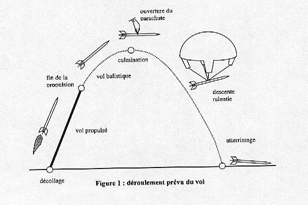
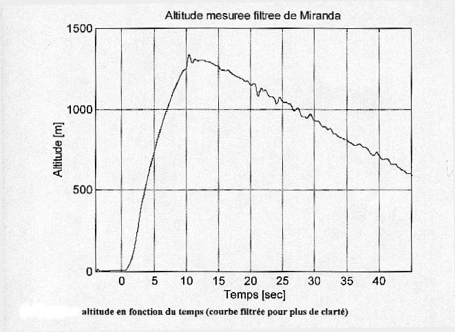
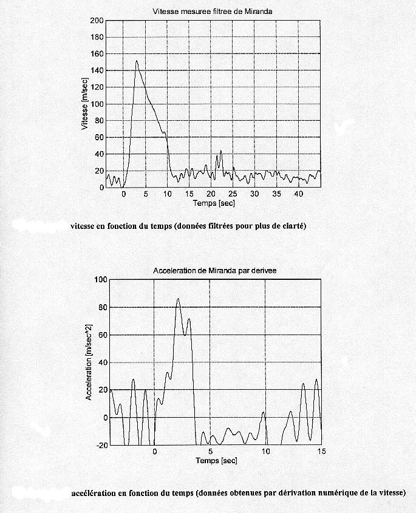
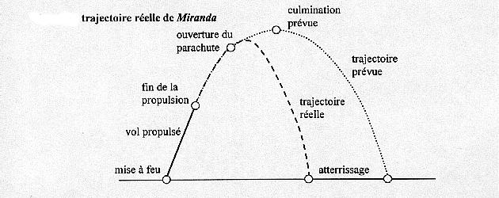

Conception : Marc-André
Hébert
Dernière mise à jour : 21 février, 2000
|
Histoire
Pour ce projet, une partie de l'équipe du Gaul s'est rendue à Bourges (en France) le lundi 25 août 1997. Une fois rendu, ils ont installé un kiosque au Parc des expositions Saint-Paul de Bourges, où à partir du jeudi suivant, le public allait avoir accès. D'ici là, la tâche principale était de terminer la fusée et c'est là qu'allait se faire le travail. Ils ont donc, du lundi au vendredi, travaillé presque sans arrêt à finaliser la fusée, dormant quelque fois seulement quatre heures. Puis finalement, samedi le 30 août, dans un ciel couvert et une chaude température, s'élevait avec puissance et bruit Miranda, dans le ciel de Jussy-Champagne, l'emplacement du site de lancement à 25 kilomètres de Bourges. Quelques secondes plus tard, le parachute s'ouvrait avec une déchirure minime, couronnant ainsi l'effort de nos valeureux gaulois d'une descente rapide, mais élégante.
Composition de Miranda
Miranda, composé d'aluminium et de qautre ailerons, avait à son bord un expérience que l'équipe du Gaul tenait à coeur: le gyroscope. Le gyroscope était l'expérience principale tranporté par Miranda. De plus, ne reculant devant rien, l'équipe du Gaul a décidé de fabriquer elle-même son gyroscope, pour de multiples raisons pertinentes. Le gyroscope à pour but de déterminer l'orientation spatiale, ou attitude, de la fusée au cours de son vol. Cette information et plus particulièrement l'angle que fait la fusée avec la verticale, est cruciale pour la réalisation d'une éventuelle fusée expérimentale comportant deux moteurs. En effet, le second moteur ne doit pas être allumé si la fusée pointe vers le bas par exemple. L'objectif visé dans le cadre du projet Miranda est la détermination en temps réel, par l'ordinateur de vol, de l'angle de la fusée par rapport à la verticale. Toutes les données étant enregistrées en cours de vol et transimises par télémétrie au sol, il est possible, après analyse des résultats de reconstituer par la suite l'altitude de la fusée au cours de son vol. Voilà en quoi consistait ce précieux gyroscope. Nous ne pouvons parler du projet Miranda, sans penser à l'électronique. Le système électronique de Miranda est divisé en quatre modules: l'ordinateur de vol, la télémétrie, les capteurs, le séquenceur et le panneau de control.
1-L'ordinateur de vol de Miranda constitue le noyau central de la partie électronique de la fusée. Ses tâches principales sont la gestion des expériences réalisés à bord de la fusée (mesure de pression statique et dynamique, ainsi que mesure de l'orientation spatiale) dont les données sont emmagasinées en mémoire et retransmises par télémétrie, et la détermination de l'instant optimal de l'ouverture du parachute pour assurer le retour en bon état de la fusée au sol. 2-La fusée Miranda utilise la télémétrie afin de transmettre, par voie hertzienne, les données qui sont alors recueillies par un recepteur se trouvant au sol. 3-Plusieurs capteurs de natures différentes jouent un rôle dans Miranda. Chacun permet de réaliser un expérience ou de fournir des renseignements utiles à l'ordinateur de vol. 4-Ce dispositif est essentiel au vol de la fusée. Il permet d'activer l'inflammateur qui, en agissant sur une goupille pyrotechnique, entraîne l'ouverture de la porte latérale, et donc le dégagement du parachute. Par conséquent, le séquenceur est isolé électroniquement du reste des composantes de la fusée et possède une alimentation indépendante. 5-Le panneau de contrôle est accessible à un utilisateur via une porte sur la paroi du niveau électronique. Il comprend: le bloc d'alimentation des divers sous-systèmes de la fusée à l'exception de l'alimentation du séquenceur, un interface série qui permet de transférer à un ordinateur personnel les données emmagasinées dans la SRAM, un interrupeteur permettant l'initialisation de l'ordinateur de vol et le démarrage des acquisitions et un interrupteur permettant de sélectionner les différents modes de la fusée.
Résultats du lancement

L'équipe du Gaul a constaté (voir le graphique de l'altitude en fonction du temps, que l'ouverture du parachute s'est effectuée pendant l'ascension (un peu après 9 s du décolage), avant la culmination (à 12 s après le décollage). Ceci a causé un ralentissement de la fusée, qui a alors atteint sa culmination à une altitude inférieur à celle qu'elle aurait pu atteindre. Le choc lors de l'ouverturee du parachute, qui, même si ce dernier ne s'est pas emmêlé, a provoqué une descente plus rapide que prévue. Miranda a touché le sol à une vitesse estimée à 50 km/h, ce qui explique les déformations des poutres internes au niveau du système de récupération ainso que les fentes sur la pointe. notons que l'altitude maximale atteinte par Miranda (1300 m environ si les capteurs ont bien fonctionné) a été bien supérieure à celle prévue par le logiciel TRAJEC (800 m environ). 
La partie mécanique du système de récupération a fonctionné comme prévu: le déploiement du parachute a été causé par l'ouverture de la porte après l'explosion de la pièce pyrotechnique. Cette explosion a été causé par un signal provenant du séquenceur qui n'a cependant pas exercé son "veto" sur le moment de l'ouverture. En effet, le signal d'ouverture du parachute a ét déclenché par l'algorithme de logique floue, qui n'a pas été évalué parfaitement dû au manque de confiance, par l'équipe du Gaul, à ce système. Il est intéressant de remarquer, voir le graphique de la vitesse en fonction du temps et la figure de la trajectoire réelle, l'évolution rapide de la fusée qui atteint un maximun (150m/s) autour de 3 secondes après le décollage: il s'agit du moment de l'arrêt du vol propulsé. La vitesse chute alors rapidement pendant que la fusée monte encore. L'ouverture légèrement prématurée du parachute, vers 9 secondes après le décollage, ralentit encore plus l'ascension qui se termine comme nous l'avons dit autour de 12 secondes.
Pour ce qui est du graphique de l'accélération en fonction du temps, il est beaucoup moins précis que les précédents, mais on peut constater que toute l'accélération significatice à été produite dans les 3 secondes suivant le décollage et que celle-ci atteint un maximum avoisinant les 80m/s.s à la fin de la combustion du moteur.

L'analyse des données provenant des trois encodeurs optiques du gyroscope démontre sans doute qu'au moins un des axes s'est bloqué très tôt au cours du vol. Le gyroscope n'étant plus libre de pivoter sur trois degrés de liberté, des forces de précession sont probablement apparues, causant des rotations aux axes libres qui ne correspondent pas à des mouvements réels de la fusée en vol. Donc, un échec partiel en ce qui à trait au gyroscope.

Comme le gyroscope a pu être récupéré, un examen de la structure a été effectué après le vol. L'équipe du Gaul a pu constater que le gyroscope a subi des dommages importants : les cadres externes et internes sont très déformés, l'axe des cadres brisé, plusieurs fils sont rompus et l'encodeur de l'axe des cadres présente une grande résistance à la rotation.
Conclusion
Miranda a fait partie , lors du Festival des Clunds Espace, de la moitié des fusées expérimentales ayant accompli un vol nominal. En ce sens, l'équipe du Gaul peut immédiatement qualifier le projet Miranda de réussite. Le vol de Miranda a permis au Gaul d'utiliser et d'augmenter sa confiance envers des systèmes qui s'étaient déjà prouvés efficaces lors du vol d'Artémis en 1995, notamment l'ensemble des capteurs de pression -algorithme de logique floue - système de récupération ainsi que la chaîne de télémétrie. Il a également donné l'occasion au Gaul de tester de nouveaux concepts : Miranda était en effet, lors de son lancement, la plus grande, la plus lourde ainsi que la première fusée du Gaul dont le diamètre est de 5"; sa conception approche la limite de la stabilité aérodynamique en utilisant le propulseur Chamois; la version actuelle de l'ordinateur de vol , en est une modifié de l'ordinateur de vol embarqué dans Artémis et Apollon; c'est également la première fois que le Gaul testait une expérience autre que la mesure de la pression statique et dynamique. De plus, l'expérience principale est loin d'être dramatique pour Gaul puisqu'elle a permis de mieux cerner les difficultés pratiques reliées à la mesure de l'orientation spatiale d'une fusée en vol. Finalement, l'expérience acquise par le Gaul, depuis les trois dernières années, s'est manifesté par un professionnalisme sur le terrain qui a d'ailleurs été récompensé par le prix Joseph-Mercier décerné par l'organisation du Festival des Clubs Espace.
|
|
Conception : Marc-André
Hébert |